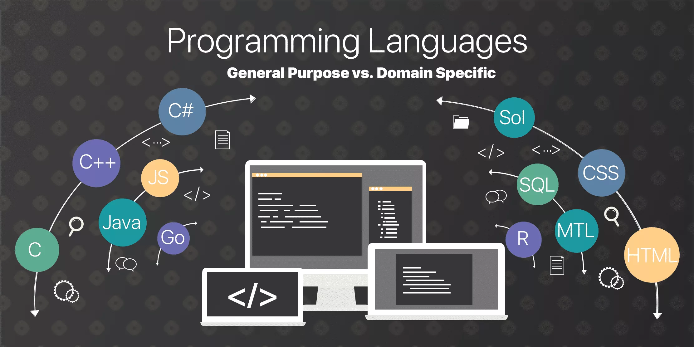

Основные категории языков программирования
- Низкоуровневые языки: Ассемблер, машинный код.
- Высокоуровневые языки: C, C++, Java.
- Языки скриптов: JavaScript, Python, Ruby.
- Функциональные языки: Haskell, Scala, Elixir.
- Объектно-ориентированные языки: C#, Java, Python.
Языки программирования играют ключевую роль в разработке программного обеспечения. Они прошли долгий путь от машинных языков до современных высокоуровневых языков.
Классификация языков программирования помогает лучше понять их особенности и области применения.
Изучение различных языков программирования позволяет выбрать наиболее подходящий инструмент для решения конкретных задач.
Важно помнить, что каждый язык программирования имеет свои сильные и слабые стороны, и выбор языка зависит от конкретных требований проекта и предпочтений разработчика.
Классификация языков программирования помогает лучше понять их особенности и области применения.
Изучение различных языков программирования позволяет выбрать наиболее подходящий инструмент для решения конкретных задач.
Важно помнить, что каждый язык программирования имеет свои сильные и слабые стороны, и выбор языка зависит от конкретных требований проекта и предпочтений разработчика.
Изучение различных языков программирования позволяет выбрать наиболее подходящий инструмент для решения конкретных задач.
Важно помнить, что каждый язык программирования имеет свои сильные и слабые стороны, и выбор языка зависит от конкретных требований проекта и предпочтений разработчика.
Важно помнить, что каждый язык программирования имеет свои сильные и слабые стороны, и выбор языка зависит от конкретных требований проекта и предпочтений разработчика.
Популярные языки программирования
- JavaScript
- Python
- Java
- C++
- C#